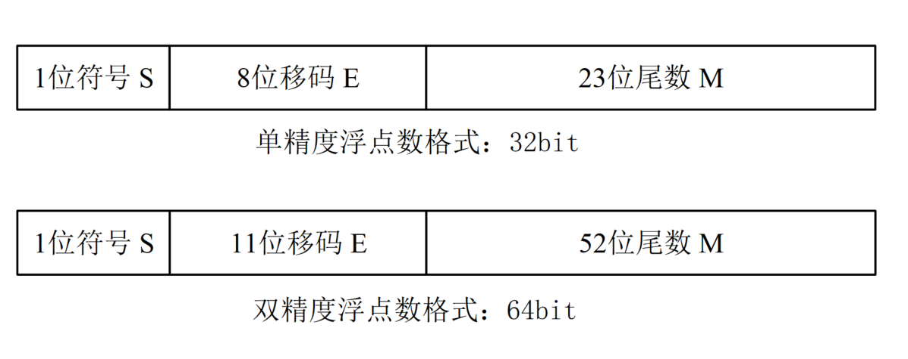

关键词 ：定点数, 浮点数, $realtobits, $bitstoreal
本节主要介绍实数与整数间相互转换的函数：$realtobits, $bitstoreal，同时说明下 real 型 (同 C 语言中的 double float）变量是怎么用多位宽的二进制码表示的。
二进制表示小数
二进制表示小数
十进制整数用二进制来表示时，需要进行数据除以 2 然后取余的操作。
小数部分用二进制来表示时恰好相反，需要进行数据乘以 2 然后判断整数部分是否大于 1 的操作。
得到 2.3125 小数部分 0.3125 的二进制表示的过程如下：
| 计算过程 | 判断 | 二进制位 |
|---|---|---|
| 0.3125 x 2 = 0.625 | < 1 | 0 |
| 0.625 x 2 = 1.25 | ≥ 1 | 1 |
| (1.25 - 1) x 2 = 0.5 | < 1 | 0 |
| 0.5 x 2 = 1 | ≥ 1 | 1 |
| 结果：用 4 位二进制数表示小数 | stop | 0101 |
所以 2.3125 的二进制表示为 dec2bin(2.3125) = bin(10.0101)。这里小数点只是用于区分小数部分的位置，即小数部分用 4bit 二进制码来表示。实际中小数点标识是不存在的。
二进制表示小数时，还有一种快捷的方法。假如小数部分用 N bit 来表示，则一个小数 num 的二进制表示数值大小为：
dec2bin(num) = bin(num x 2^N )
例如小数 2.3125 转换过程如下：
2.3125 x 2 ^ 4 = 37 = bin(100101)
小数部分位宽为 4， 则 dec2bin(2.3125) = bin(10.0101）。
二进制转为小数
二进制整数转换为十进制时，需要按位进行以 2 为低的指数相乘并累加的运算。
二进制小数转换为十进制时，需要按位进行以 1/2 为低的指数相乘并累加的运算。
例如小数位宽为 4 时，则 bin(11.1001) 小数部分表示的十进制小数为：
bin2dec(1001) = 1 x 2^(-1) + 0 x 2^(-2) + 0 x 2^(-3) + 1 x 2^(-4) = 0. 5625
则小数部分位宽为 4 的二进制小数 bin(11.1001) 表示的十进制小数为 3.5626 。
N 位宽小数部分的二进制小数 num 转为十进制时的快速方法为：
bin2dec(num) = num / 2^N
例如 bin(11.1001) 表示的小数计算过程为：
bin(11.1001) = bin(111001) / (2^4) = 57/16 = 3.5625 。
其实多位宽的一个变量表示整数还是小数，Verilog 编译器是不区分的，都只是人为的在小数层面上进行运算。
浮点数表示方法
定点数是指小数点位置固定不变的数。整数就是一种定点数，因为小数点总是在最后一位。
浮点数是指小数点的位置不是固定的数。例如 1.2 x 1.3 =1.56，小数点的位置一直在浮动，此谓浮点数。
当然也可以将小数的小数点位置固定，此谓定点小数。但该表示方法会降低小数的精度。例如固定小数点后面只有一位数据表示小数，则 1.2 x 1.3 = 1.5，丢失了部分数据。
十进制浮点数一般表示方法：
dec(num) = (-1) ^ S x M x (10^E );
S 为符号位，为 1 时表示负数，为 0 时表示正数。
E 为比例因子的指数部分，用整数表示，称为阶码。阶码指明了小数点在码字中的位置，因而决定了浮点数的表示范围。
M 为小数部分，称为尾数。尾数位宽决定了浮点数的表示精度。
例如数字 100.0344 可以表示为：
1995.0907 = (-1) ^ 0 x 199.50907 x 10^1 （正数，尾数为199.50907, 阶码为1） = (-1) ^ 0 x 1.9950907 x 10^3 = (-1) ^ 0 x 0.19950907 x 10^ 4
同理，二进制浮点数一般表示方法：
dec(num) = (-1) ^ S x M x (2^E )
例如：
dec(2.3125) (十进制) = bin(10.0101)
= bin(10.0101) x 2^0
= bin(1.00101) x 2^1 (正数，尾数为 1.00101，阶码为 1）
= bin(0.100101) x 2^2
由上可知，同一个浮点数不同的表示方法，尾数和阶码均是不同的。为了便于移植，1985年 IEEE (Institute of Electrical and Electronics Engineers, 美国电气与电子工程协会) 提出了 IEEE-754 标准，以此作为浮点数表示格式的统一标准。
IEEE-754 标准从逻辑上采用一个三元组 {S, E, M} 来表示浮点数 Num。
S 代表符号位，0 和 1 分布代表正数和负数。
E 代表指数部分，称为移码。为避免出现正负指数，移码是由阶码加上固定的偏移量得到的。所以阶码可由移码得到：E - 2^(W-1) +1 。W 为移码位宽。指数基底为 2。
M 代表尾数，尾数的最高位总是为1，但是尾数部分不存储该位数据，只存储小数部分。所以，尾数代表的数值大小实际是 1.M 。
规定单精度浮点数用 4 字节存储，双精度浮点数用 8 字节存储，示意图如下。

单精度格式 (32 位)：S 符号位 1 位宽；E 阶码 8 位宽，阶码的偏移量为 127 (7'h7F)；M 尾数 23 位宽，表示小数，小数点放在尾数域的最前面。
双精度格式 (64 位)：S 符号位 1 位宽；E 阶码 11 位宽，阶码的偏移量为 1023 (10'h3FF)；M 尾数 52 位宽，表示小数，小数点放在尾数域的最前面。
32 位浮点数 N 的真值可表示为：
Num = (-1)^S × (1.M) × 2 ^(E-127)
64 位浮点数 N 的真值可表示为：
Num = (-1)^S × (1.M) × 2 ^(E-1023)
例如双精度浮点数对应的二进制码 64'h4002_8000_0000_0000 表示的小数为：
Num = (-1)^0 x (1+ 8'h28/2**8) x 2^((12'h400 & 11'h7FF)-1023) = 2.3125
上述尾数计算过程省略了后面一连串的"0"，只取前 8bit 有效位。
例如双精度浮点数 -13.14 的二进制表示过程为：
| 需要 1bit 表示符号位 | S = 1 |
|---|---|
| 需要 4bit 表示整数 | 13 = bin(1101) = bin(1.101) x 2^3 |
| 需要 11bit 表示阶数 | E = 3 + 1023 = 11'h402 |
| 需要 (52-3)bit 表示小数 | 0.14 * 2^(52-3) = 78812993478983.688 ≈ 78812993478984 = 49'h47ae147ae148 |
| 需要52bit表示尾数：整合两部分小数 | M = (bin(101)<<49) + 49'h47ae147ae148 = 52'ha47ae147ae148 |
| 浮点数二进制码 | {S, E, M} = 32'hc02a_47ae_147a_e148 |
而 Verilog 中的 real 型变量，正是 IEEE-754 标准的 64bit 位宽的双精度浮点型变量。
转换函数
| 调用系统任务 | 任务描述 |
|---|---|
| int_val = $rtoi( real_val ) ; | 实数 real_val 转换为整数 int_val 例如 3.14 -> 3 |
| real_val = $itor( int_val ) ; | 整数 int_vla 转换为实数 real_val 例如 3 -> 3.0 |
| vec_val = $realtobits( real_val ) ; | 实数转换为多位宽的寄存器向量 寄存器内按照 IEEE-754 标准存储双精度浮点型数据 |
| real_val = $bitstoreal( vec_val ) ; | 多位宽的寄存器向量转换为实数 |
real 型变量的产生或转换过程，都应该遵循 IEEE Std 754-1985 [B1] 标准。
利用 $realtobits 与 $bitstoreal 对数据进行转换：
实例
reg [63:0] num_bits ;
initial begin
num_bits = 64'h4002_8000_0000_0000 ;
$display("-14.13 -> hex: %h", $realtobits(-13.14));
$display("64'h4002_8000_0000_0000 -> real: %f", $bitstoreal(num_bits));
end
仿真 log 如下，可知转换正确。

利用 $itor 与 $rtoi 对数据进行格式转换：
实例
initial begin
$display();
$display("Real to integer: %h", $rtoi(13.14));
$display("Display integer in float: %f", 1001);
$display("Integer to real: %f", $itor(1001));
end
由以下仿真 log 可知，$rtoi 做实数（13.14）向整数（4'hd）的转换时，只截了取整数部分。$itor 做整数 (1001) 向实数（1001.000000）的转换时，似乎没有什么变化。

其实，$rtoi 与 $itor 的功能是改变变量的存储方式。
例如 14 以整数型变量储存时，表示方法为 32'h1110，而如果以实数型变量存储，则表示方法为 64h402c_0000_0000_0000。

点我分享笔记